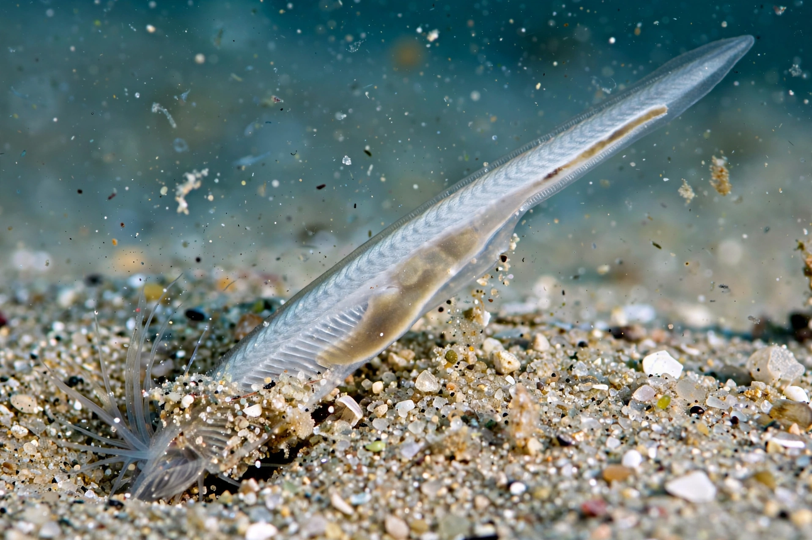

Lancelets, also known as amphioxus, are small fish-like marine chordates of the subphylum Cephalochordata. They retain throughout life the defining chordate features — notochord, dorsal nerve cord, pharyngeal slits and post-anal tail — and are widely used as a model for vertebrate ancestry.

| Kingdom | Animalia |
|---|---|
| Phylum | Chordata |
| Subphylum | Cephalochordata |
| Genus example | Branchiostoma |
Adults, typically 5–8 cm long, burrow tail-first in shallow sandy seabeds, filter-feeding on plankton drawn through the mouth by cilia. They lack a true brain, heart, eyes and paired fins, though they possess light-sensitive cells and a simple circulatory system. Sexes are separate, spawning gametes into the water.
Because lancelets diverged before the vertebrate radiation, their genome — sequenced for Branchiostoma floridae in 2008 — illuminates how vertebrate gene families and body plans evolved. Fossils such as Pikaia from the Cambrian resemble lancelets, underscoring the group's ancient origins. See also Lamprey.